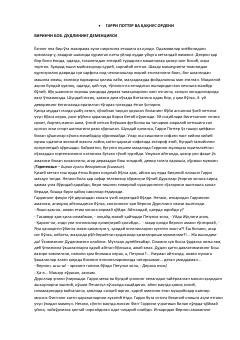

GPGarri Potter va Qaqnus ordeni haqidagi sehrli sarguzasht romanining o'zbek tilidagi tarjimasi.
Garri Potter seriyasining beshinchi kitobida bosh qahramon sehrgarlar olamidagi xavfli voqealar va yangi sinovlar bilan yuzma-yuz keladi. U Qaqnus ordeni a'zolari bilan birgalikda qora kuchlarga qarshi kurashni davom ettiradi. Roman yoshlar va kattalar orasida mashhur bo'lgan sevimli fantastik asarlardan biridir.